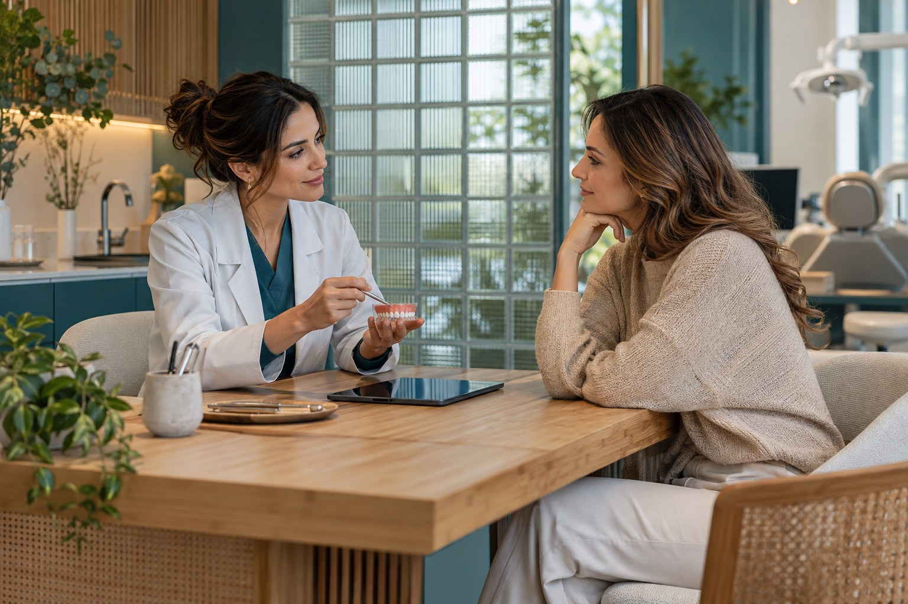
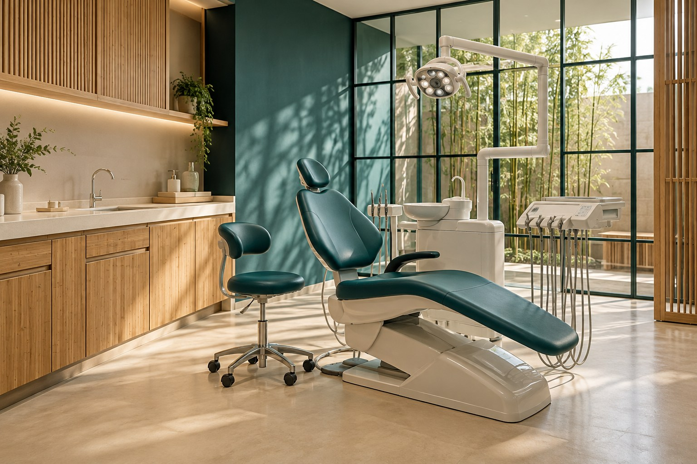

Atlas Odontologia
Entenda as partes.
Cuide do todo.
Um ponto de partida para conhecer o cuidado, compreender as etapas e levar suas perguntas ao encontro.

Seu mapa do cuidado.
Áreas e assuntos para preparar uma conversa. A indicação de cuidados depende de avaliação profissional.
Nove assuntos para conhecer.
Prevenção e rotina
Sua rotina de cuidado
Uma conversa sobre hábitos e acompanhamento da saúde bucal.
Ler o assuntoPrevenção e rotina
O que deseja esclarecer
Como apresentar suas dúvidas em uma avaliação individual.
Ler o assuntoPrevenção e rotina
Como será o acompanhamento
Perguntas para organizar retornos e próximos passos.
Ler o assuntoOrtodontia
Sua dúvida sobre alinhamento
O que contar sobre alinhamento e função na primeira conversa.
Ler o assuntoOrtodontia
Avaliação e possibilidades
Como conhecer as opções sem escolher uma técnica antes da avaliação.
Ler o assuntoOrtodontia
Etapas antes de decidir
O que confirmar sobre etapas, acompanhamento e condições.
Ler o assuntoCuidado na infância
O ritmo da criança
Conhecer o ambiente e abrir espaço para perguntas.
Ler o assuntoCuidado na infância
Participação da família
Como conversar sobre adaptação e presença dos responsáveis.
Ler o assuntoCuidado na infância
Preparação para chegar
O que confirmar e como apresentar o primeiro encontro.
Ler o assunto
Nenhum assunto encontrado. Limpe os filtros ou tente outra palavra.

O espaço
Conheça onde a conversa começa.
Explore uma proposta de ambiente e veja o que confirmar antes de organizar seu primeiro encontro.
O espaçoO que acontece no primeiro encontro?
A proposta demonstrada começa com uma conversa sobre o que você procura, seguida da avaliação e da explicação dos próximos passos. O protocolo real deve ser confirmado com a clínica.
Continuar neste assuntoPreciso saber qual cuidado procurar?
Você pode começar descrevendo sua dúvida. A avaliação profissional ajuda a organizar as possibilidades; não é necessário escolher um tratamento pelo site.
Continuar neste assuntoComo confirmar valores e condições?
A equipe da clínica deverá informar valores, formas de pagamento e condições antes da contratação. Este catálogo não apresenta preços fictícios.
Continuar neste assunto